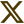
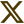

About
Infra Engineer professionally, creative on the side, sometimes a photographer. Nerd to the core.
I'm always working on new projects, follow me on social media of your choice to stay up-to-date!
You can find artwork of my character here: Arts
Recent blog posts
Show more
Projects
-

Synth.zip
synth.zip is a Mastodon by and for the synth species community, as well as the wider furry and LGBTIQA+ communities. Anyone 18+ is welcome to join!
-
blog.illixion.com
Technology-related blog that I semi-regularly update. It's mostly a personal notepad that I go back to if I need something, but I also share the knowledge within it with the rest of the world. You can see some of the posts above.
Subscribe to the RSS feed to stay up-to-date!
-

[archived] Kataprints was an online furry clothing and accessory store based in Riga, Latvia. Purchases support artists directly, products ship worldwide and you get high-quality items in return. I was responsible for creating and maintaining the website, as well as PR and marketing.